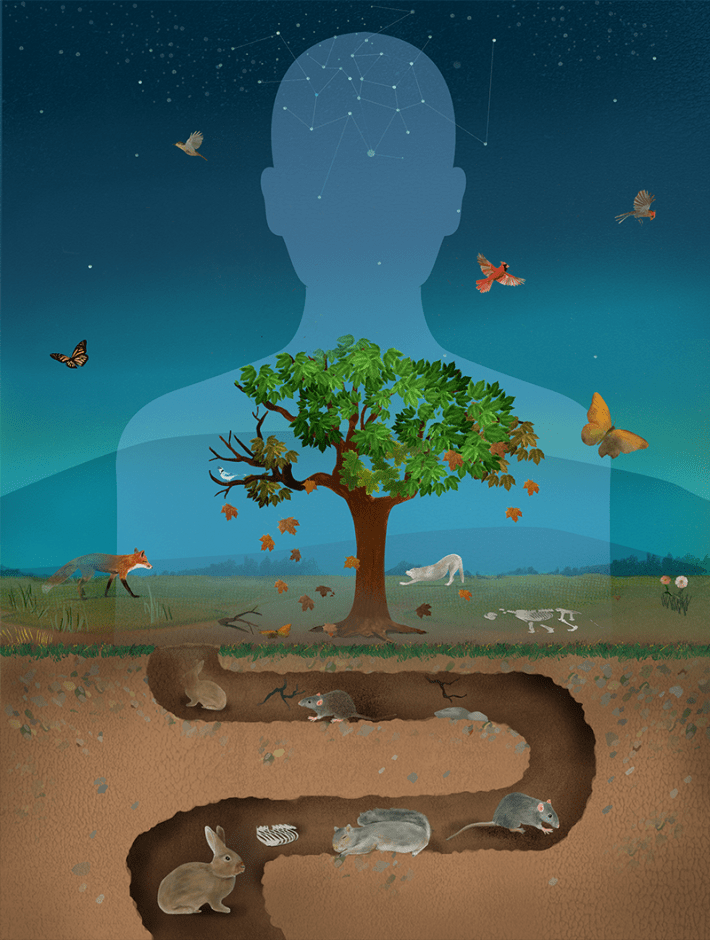

Jimo Borjigin never intended to study death. Back in the mid-2010s, the consciousness researcher at the University of Michigan Medical School in Ann Arbor was instead interested in circadian rhythms, the internal cycles that regulate our physical, mental, and behavioral states throughout each day. The circadian clock is a bit of a black box, Borjigin says, so to study it she and her team developed an automated system to continuously monitor neurotransmitters that regulate circadian rhythms in rats.
Over the course of her research, the scientists tracked the animals for weeks at a time, and Borjigin began to notice something unusual. A few of the animals died while under observation, and when they did, the researchers’ sensors recorded a massive and unexpected spike in serotonin for up to 30 seconds after their hearts stopped beating. In humans, serotonin dysregulation has been linked to intense hallucinations, but Borjigin didn’t know what to make of such a finding in the context of rats. Or in death. Like any good scientist, she looked to the literature.
Nautilus premium members can listen to this story, ad-free.
Nautilus members can listen to this story.
“I was sure we must know everything there is about the death process already, but when I went looking for evidence of this serotonin spike, I found nothing,” she says. “Looking into the research on death more broadly, I was shocked at how little we truly understand about this thing that happens to every one of us.”
“Cadavers are often in a state of reversibility for hours, if not days, postmortem.”
The experience prompted a shift in Borjigin’s research focus, and today she studies consciousness in relation to death and near-death experiences. In 2023, she and her colleagues published a contentious finding: that humans, like her rats, also experience a dramatic shift in brain activity when we die. The team monitored four comatose patients as they were taken off life support, and in two cases, detected a spike in gamma waves—the fastest type of brain wave, most active during periods of intense focus or problem solving—in a part of the brain correlated with dreaming, visual hallucinations, and altered states of consciousness. “To me, this suggests a covert consciousness that is not usually observed by bystanders who might otherwise look at a person and think they are unresponsive,” she says. “If that’s true, it definitely makes me think we need to revisit our definition of death.”
While Borjigin acknowledges that her work is preliminary, her observations and others like them show just how blurry the line between life and death has become, and how much science still stands to learn about such a pivotal event. As technological advances increasingly allow researchers to study death—including interventions that now allow for the use of so-called living cadavers in scientific research—so too have they necessitated new, oftentimes fraught conversations about the nature of death, its biological and societal underpinnings, and whether existing legal definitions are in alignment with current medical standards.
“The somewhat contentious space that we’re in right now is that we have different ways that we can say that someone is dead, and not all of them agree with each other. There are legal definitions and medical ones, social definitions, and many different religious interpretations,” says L. Syd M. Johnson, a neuroethicist at SUNY Upstate Medical University in Syracuse. “It’s a surprisingly complicated question, but that also makes this an exciting time to be considering it.”
Across many cultures, life has been linked not to our bodies, but to intangible souls, and so questions of death remained most squarely in the purview of religious representatives. Early definitions associated with Western religions in the mid 1700s timestamped death using the soul’s departure from the body. It wasn’t until about a century later that the first biological description of death—the cessation of heart action and breathing—appeared in a medical text, 1873’s Manual of Medical Jurisprudence, written by Alfred Swaine Taylor, a British toxicologist and medical writer. This so-called cardiopulmonary concept dominated scientific thinking for the next century, and remains the most common criteria by which doctors declare someone dead today.
But medical advances, including interventions such as CPR and organ transplantation and the emergence of technologies including ventilators and defibrillators, have increasingly clouded that definition. People who might once have died from drowning or heart failure can now be resuscitated, receive an organ transplant, or even have their circulation artificially maintained. Death, many scientists now argue, is better thought of not as an absolute, but as a complex and evolving process that can sometimes be reversed with proper care.
“Irreversibility is just a reflection of a lack of medical treatments, which we’re developing more of all the time,” says Sam Parnia, a clinician at NYU Langone Medical Center in New York City who focuses on cardiac arrest. “We see now that death is a continuum, and cadavers are often in a state of reversibility for hours, if not days postmortem.”
The emergence of neuroscience as a discipline prompted even more rethinking on death. In 1968, a committee based at Harvard University met to establish a definition centered around neurological criteria. In their final report, the group described death, in part, as an “irreversible coma,” a term they used somewhat interchangeably with what we would today refer to as brain death.

Illustration by Ellen Weinstein
Not everyone agreed with this approach, with one researcher calling the recommendations “a bane for bioethicists from day one.” At the time, the question of when to stop providing life support was not clearly differentiated from the question of when a patient was dead, and the group’s chair, Harvard anesthesiologist Henry Beecher, referenced a hypothetical future in which “hopelessly unconscious” patients would take up space in hospitals at enormous cost. Others were hesitant to declare death too soon, however, worried that premature declarations could be rushed to kickstart the harvesting of organs for donation.
Some of this contention was settled with the passing of the Uniform Determination of Death Act (UDDA) in 1981, a model United States law intended to help states craft their own unified policies. The UDDA sought to bridge the cardiopulmonary and brain-based concepts, defining death as either the irreversible cessation of circulatory and respiratory functions or the irreversible cessation of all functions of the entire brain, including the brain stem. This latter point acknowledges that it’s the brainstem that controls essential, automatic functions such as breathing, heart rate, and blood pressure, and its inclusion places the UDDA more in line with a “whole-brain” approach rather than a “higher brain” model focusing on consciousness as a hallmark of life. Today, medical professionals use UDDA criteria when declaring someone dead, kickstarting the legal, social, and clinical processes that come next, including organ donation, mourning rituals, and the settling of a person’s personal affairs.
The UDDA has generally been successful in its purpose for the past 40 years, says David Magnus, the director of the Stanford Center for Biomedical Ethics in California, even though it too has garnered its share of controversy. “The UDDA is an amazingly successful policy—tens of millions of people die each year, and we’re generally not arguing over that because of the criteria we have,” he says. “Having said that, a feeling has grown over time that there’s a lack of fit between the actual language of the law and the details of clinical practice, such that we’re now reconsidering our definitions once again.”
Many of the arguments around how we define death stem from a lack of consensus over what tests or metrics should be used to verify that death has occurred, and how much philosophy should factor into medical or legal decisions.
For example, since the passing of the UDDA, researchers have found that the hypothalamus—a brain region that regulates appetite, sleep, and hormone release—often continues to function for longer than the rest of the brain after death. This prolonged hypothalamic activity results from that region receiving some blood flow from a different source than the rest of the brain. While most blood flow makes its way to the brain from the carotid arteries in the neck, the hypothalamus is also supplied via a network of arteries at the base of the brain called the circle of Willis. Medical professionals largely agree that a functioning hypothalamus isn’t a meaningful sign of life, but some physicians have suggested that an additional test for this should be added to the criteria for declaring death. Doing so would necessitate rewriting the UDDA, however, and its reference to a cessation of function across the entire brain.
Piotr Nowak, a bioethicist at Jagiellonian University in Kraków, Poland, notes that there are also several cases over the past few decades that show how ambiguities in laws about determining clinical death can create confusion. Many questions involve considerations of consciousness—a more philosophical aspect that does not come, yet, with its own set of medical tests.
Among the most famous of these cases involves Jahi McMath, a California teenager who was declared brain-dead in 2013 at the age of 13 following complications from a tonsillectomy. Her family resisted the declaration, and McMath was kept on life support for another four years, continuing to develop, undergoing puberty, and appearing to demonstrate some responsive behaviors, such as small movements and sporadic changes in her heart rate, before dying from liver failure in 2018. McMath’s story echoes others in which people have regained consciousness following long periods of brain death, alongside animal studies showing that at least some brain function can be restored in pigs hours after death. “It’s clear our understanding of our own mind remains incomplete in ways that make medical and policy choices difficult,” Nowak says.
“We still have no idea how it is that something like a brain cell can create something like a thought.”
In response to the changing medical landscape, including clinical innovations and what they have revealed about the human brain, bioethicists, medical professionals, lawyers, representatives from advocacy groups, and others have been coming together to rethink what brain death actually means. One group, called the World Brain Death Project, has been working to establish an international framework for brain death, while in the U.S., a group met in 2021 to gauge whether an update to the UDDA might now be needed. The group agreed on the necessity of an update but failed to reach a universal agreement, and today, the law remains as originally written.
Even so, Magnus, who participated in the discussions, says the meetings were productive and worthwhile in bringing together the leading minds pondering the question of death and how we define it. Magnus, for example, was able to introduce his own definition, called the neuro-respiratory concept, that he says could clarify some of the current confusion. Under these criteria, a person can be declared dead if they suffer a brain injury “leading to permanent loss of the capacity for consciousness, the ability to breathe spontaneously, and brainstem reflexes”—wording that Magnus says would bring the law into alignment with the most common criteria for declaring deaths used by medical professionals today.
Such discussions are particularly critical right now, he adds, because the advent of successful experimentation with brain-dead bodies in fields as disparate as organ transplantation and drug delivery has returned this question to the public spotlight. In 2016, for example, a company called Bioquark announced a controversial plan to regenerate neurons in the brains of recently-deceased patients by injecting their brains with stem cells and other materials. While the company’s attempts were ultimately unsuccessful, the underlying work lives on in the research of one of its original physicians, who has since carried out similar experiments on roughly 30 cadavers as recently as last year. And in 2024, a pig liver was successfully transplanted into a living cadaver—with permission from the clinically dead person’s family—and continued to function for 10 days before being removed.
“There are all the medical and legal reasons we need a standardized definition of death that at least most of us can agree on, but there’s also an ethical reason when it comes to communicating with families and with the public,” Magnus says. “When you’re working in such a fraught area as this, a lack of clarity can lead to some murky ethical choices that we need to be able to defend.”
Some believe that sitting with uncertainty about when death occurs may ultimately allow us to gain new insights into this process and transformation that we might not see otherwise.
Steven Luper, a professor of philosophy at Trinity University in San Antonio, Texas, says that there’s a growing sentiment that the moment of death—perhaps the most personal experience there is—should be left to each of us to decide and communicate through a family member, religious figure, or end of life doula. “The goal for uniform criteria is to really help out the medical profession and the law, and some people have said that’s not a good enough reason to deprive people of their liberty,” he says. “Rather, some believe we should allow each person to define their own interpretation based on their personal narratives and world views.”
Researchers are also increasingly interested in bringing a scientific perspective to debates long considered the realm of philosophy, particularly around the idea of consciousness, which is inextricably linked to questions of life, identity, and death. One barrier to this type of research is the lack of reliable metrics for studying consciousness. In fact, Parnia notes that today, there is no definitive evidence that consciousness even emerges from the brain. “We still have no idea how it is that something like a brain cell can create something like a thought,” he says.
In a large, multicenter study published in 2023, Parnia and his colleagues analyzed patterns of brain activity—including delta, theta, and alpha waves, which together dictate brain activity and various states of arousal—in patients experiencing cardiac arrest, which Parnia says is biologically “indistinguishable from death.” The results suggest that consciousness and awareness may occur as long as an hour after a person’s heart has stopped beating. Furthermore, the brain wave patterns the team detected using electroencephalography (EEG) may be the first reliable biomarkers capable of measuring consciousness over time.
Charlotte Martial, a neuroscientist in the Coma Science Group at the University of Liège in Belgium, is similarly interested in what we can learn about death from studying moments when people are potentially conscious but largely unresponsive, such as when they are under general anesthesia or experiencing cardiac arrest. These types of experiences, she says, can function as a sort of proxy for studying the moments surrounding death under laboratory conditions, rather than relying on isolated case studies with small numbers of patients. Currently, Martial is probing whether psychedelic experiences can fulfill this role, too, by inducing states similar to near-death experiences that patients can then share details about with scientists.
“Medicine has defined these criteria for brain death, but we don’t yet understand everything about the subjective experience of that,” she says, adding that developing empirical methods for studying something like a near-death experience could help scientists better understand the distinctions between consciousness and responsiveness, and what that means for our clinical concepts of death.
Borjigin’s early discoveries about the potentially altered states in her lab rats’ brains during death continue to inspire her search for understanding. One of her working hypotheses suggests that perhaps the brain takes a more active role in how death progresses than we give it credit for. But furthering her research won’t be easy. Borjigin and others continue to face a scarcity of funding and a lot of misconceptions about the nature and purpose of their research. Death remains a contentious and hard-to-define process.
Still, understanding what happens to each of us in our final moments, crossing the borderlands between life and death, would seem a worthy inquiry. “Even as we’re still trying to wrap our own heads around it,” Borjigin says, “it seems undeniable to me that something worth looking at is going on here. 
References
- Original Article: https://nautil.us/how-to-tell-if-youre-dead-1218090/